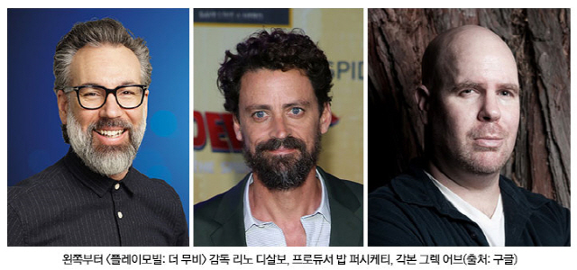
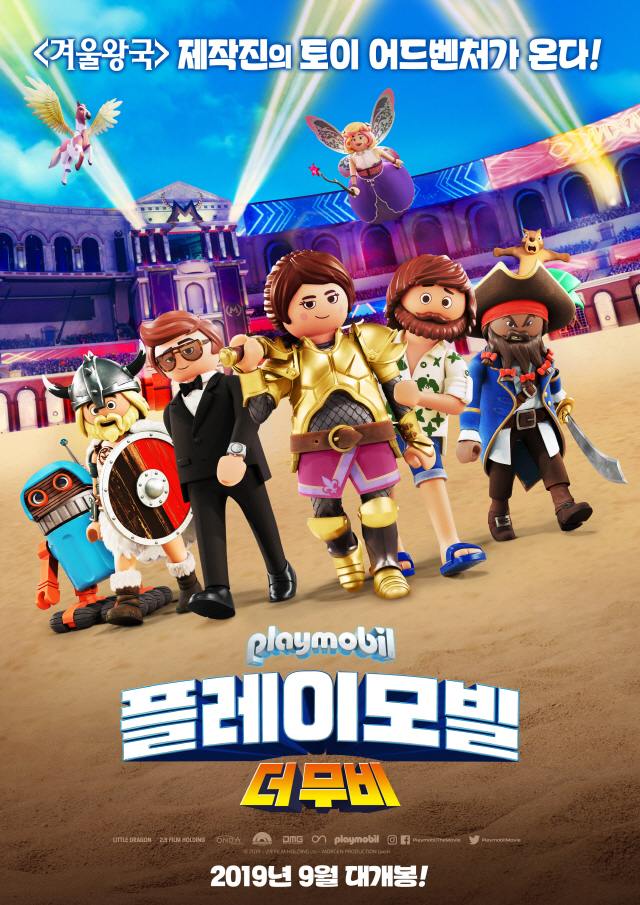

'플레이모빌: 더 무비' 디즈니, 드림웍스의 스페셜리스트들 총집합
최재경 기자 입력 2019. 08. 07. 06:57
[서울경제] 디즈니 <겨울왕국> 제작진이 만든 토이 어드벤처 <플레이모빌: 더 무비>［주연: 다니엘 래드클리프, 안야 테일러 조이, 아담 램버트, 짐 개피건, 가브리엘 베이트먼 | 감독: 리노 디살보 | 수입/배급: ㈜올스타엔터테인먼트]가 블록버스터급 제작비와 화려한 제작진 라인업을 공개하며 화제가 되고 있다.

/사진=㈜올스타엔터테인먼트
디즈니, 드림웍스 제작진의 합작으로 탄생한 토이 어드벤처 <플레이모빌: 더 무비>가 올 추석 강자다운 블록버스터급 제작진과 이에 어울리는 제작비를 공개하며 화제가 되고 있다.

/사진=㈜올스타엔터테인먼트
<플레이모빌: 더 무비>는 이미 <겨울왕국>, <라푼젤>을 선보인 리노 디살보가 감독을 맡으면서 많은 기대를 받고 있는 가운데, <플레이모빌: 더 무비>에 참여한 화려한 제작진들이 시선을 사로잡는다. <플레이모빌: 더 무비> 각본으로는 82회 아카데미 시상식 장편 애니메이션 부문에 노미네이트 된 디즈니 애니메이션 <공주와 개구리>의 각본가 그렉 어브와 제이슨 옴랜드가 함께했으며, 프로듀서로는 91회 아카데미 시상식에서 장편 애니메이션상을 수상한 <스파이더맨: 뉴 유니버스>의 감독 밥 퍼시케티와 아트 부문의 스테판 프랭크가 합류해 완성도를 높였다.
이뿐 아니라 <겨울왕국>, <모아나>, <주먹왕 랄프>를 비롯해 <슈퍼배드> 시리즈, <미니언즈>, <마이펫의 이중생활 2>, <인사이드 아웃> 등 최고의 애니메이션에서 활약한 제작진들이 <플레이모빌: 더 무비>에서 실력을 발휘하면서 최고의 퀄리티를 이뤄냈다.
게다가 <슈퍼배드>, <미니언즈>보다 높은 7천5백만불의 제작비는 차세대 추석 애니블록버스터로 <플레이모빌: 더 무비>를 주목해야 하는 이유 중 하나다. 이로써 <플레이모빌: 더 무비>는 보도스틸을 통해 공개한 매력 넘치는 판타지 월드와 등장인물뿐 아니라 최고 제작진이 선보일 높은 완성도까지 관객들의 많은 궁금증을 불러 일으키고 있다.
1974년 시작해 전 세계 100개국, 30억 개 이상의 판매량을 기록하고 있는 장난감 ‘플레이모빌’ 의 첫 극장판 <플레이모빌: 더 무비>는 1도 상상할 수 없었던 진짜 장난감 세계에 빠지게 되며 벌어지는 토이 어드벤처를 담을 예정이다.
매력적인 장난감들과 애니메이션 스페셜리스트들이 이뤄낸 높은 퀄리티까지 어느 하나 빠지지 않는 <플레이모빌: 더 무비>는 지금껏 전혀 상상하지 못한 판타지한 세상으로 관객들을 초대할 예정이다.
블록버스터급 제작비와 그에 어울리는 환상적인 제작진 라인업으로 기대를 한껏 끌어올리고 있는 <플레이모빌: 더 무비>는 올 추석 상상 초월의 매력으로 관객들을 찾아갈 예정이다.